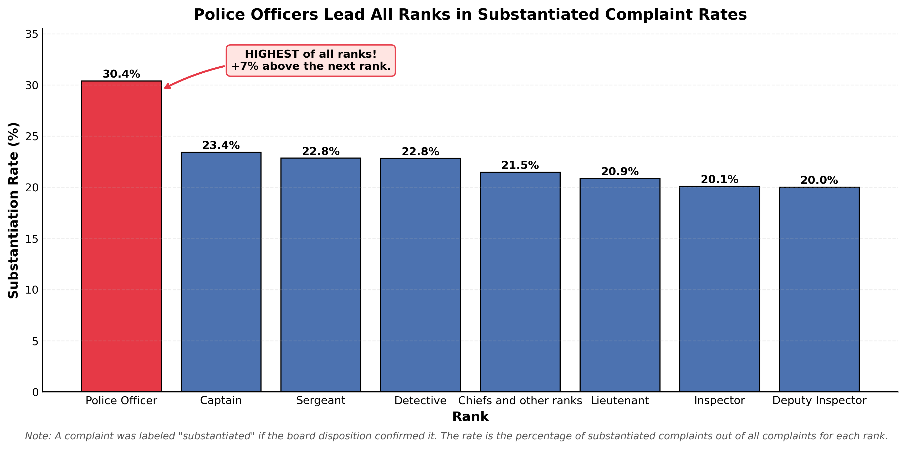
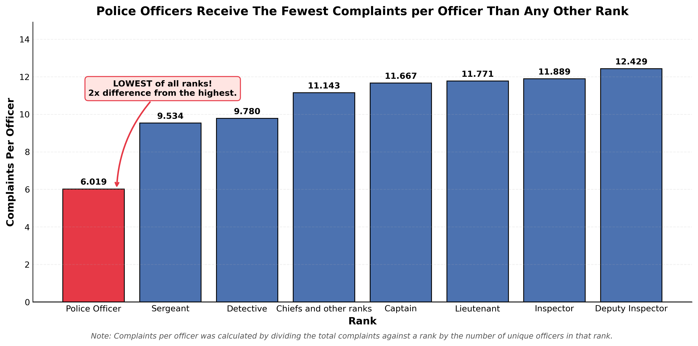

Proposition: Police officers are the most problematic rank.
FOR the Proposition

Design Decisions and Rationale:
- Decision 1: Isolating Police Officers with a single contrasting color (Score: +1.5, Earnest) The use of the color red for the focal point was done intentionally to contrast the ranks. Red was used to direct attention towards the Police Officer rank, while the other ranks are kept a uniform color (blue); This visually separates the Police Officer rank, which pops out pre-attentively to those who view the graph, from the rest of the ranks through the Gestalt Principles of Similarity. This approach was chosen because it allows people who view this graph to be instinctively directed without making the other bars look split apart. This is earnest because it directs attention without distorting or hiding any data from the audience. An alternative considered prior was using gray instead of blue for the non-target ranks to create a stronger contrast, but gray felt too dull and risked making the ranks seem unimportant to the visualization. Instead, blue was chosen because it provides a smooth contrast with red while keeping the other ranks visually present. The color-coding method is effective because it allows the center of attention to be the rank that is of a different color, however as mentioned before, having only one rank stand out visually would pose a potential risk of having too much contrast where the Police Officer rank is overemphasized, possibly drawing attention away from meaningful comparisons among other ranks.
- Decision 2: Keeping the Y-Axis at zero (Score: +2, Earnest) The y-axis begins at 0 (0.0) rather than a higher value. This was an important decision that we made because the substantiation rate is a ratio measurement, meaning that it has a zero baseline. When it is 0%, this means no complaints were substantiated for that rank. Starting at zero allowed the length of each bar to be proportional to its actual value. If we didn’t do this, the 7% gap between the Police Officer rank and the next highest would appear dramatically larger, as it would exaggerate this difference even though the difference is only 7%. Starting at 0 is effective because it allows us to represent the true magnitude of the gap rather than trying to deceive someone with the use of a truncated y-axis. However, beginning at 0 also has some limitations because it can make the difference that we want less visually dramatic, reducing the impact that we want to present. The decision is fully earnest because it shows a truthful representation of the findings instead of exaggerating the gaps in data. An alternative was to consider starting the y-axis at a higher value to make the gap seem larger and more dramatic, which would have strengthened the argument. However, this was decided against because it would have been deceptive, and even with a truthful representation, people can still paint the same picture that police officers are indeed the most problematic rank.
- Decision 3: Calculating the y-axis as substantiation rate per rank (Score -1.5, Deceptive) Police officers hold the largest multitude of personnel, while there are fewer captains and detectives in their respective fields. By default, it would appear that police officers receive the most complaints and therefore have the highest substantiated complaint rate. If we were to present a different metric, such as “substantiated complaints per officer in each rank,” comparison may appear less extreme because this new metric takes into account the number of police officers there are in relation to the rate of complaints. However, by using “substantiation rate per rank” (substantiated complaints divided by total complaints), our focus shifts to how often accusations are confirmed, not how much misconduct each officer contributes. This ignores differences in rank size, which can mislead readers into thinking police officers are the most problematic, despite the metric not accounting for how many people are in each rank. This method works well because it creates a simple, compelling comparison across ranks, making it easy for viewers to identify “the most problematic rank.” However, some people could argue that the metrics are misleading, as it ignores the independent size of each rank.
AGAINST the Proposition

Design Decisions and Rationale:
- Descision 1: Normalizing the y-axis by calculating complaints per officer (Score: +1, Earnest) Police Officers are the largest rank by far, as there are many more of police officers than any other ranks. The metric that is being used takes into account the large amount of police officers. This would had shown police officers having the MOST complaints by far out of any rank, just because there are only more of them. However, by normalizing by officer hides this and makes them look like one of the best ranks, or in spirit the least problematic rank out of allows the ranks that there are in the police department. This is deceptive because this metric was chosen to favor the argument while ignoring the total impact that there actually is. It instead shows that other ranks have far more complaints per officer. It paints a fair picture that police officers are the least problematic out of all the department ranks.
- Decision 2: Sorting the bars from lowest to highest (Score: -0.5, Slightly Deceptive) Sorting the bars from lowest to highest put Police Officers at the far left, essentially making them the first bar that the viewer will see when they visualize this graph. While sorting by value is a standard design that improves readibility, this ordering psychologically anchors the viewer to see Police Officers as the starting point to the graph, as when people start to compare ranks with each other. They will most likely compare each rank with the Police Officer rank because it is essentially set as the baseline, which proves truth into the claim that police officers aren't the most problematic rank in the department. This ordering was designed to make the "lowest" ank immediately visible and feel like the baseline where people can compare that rank with other ranks.
- Decision 3: Adding an annotation with arrow to highlight the finding (Score: +2, Earnest) The annotation states the main takeaway of the graph with an arrow that points directly to the Police Officer bar. This leaves no amiguity about the takeaway. We're essentially telling them to focus on this bar and read the annotation about it. When they read a "2x difference from the highest," it should imply that they should look at that bar and the highest bar and see the massive difference between the two bars. The curved aarrow creates a visual connction between the text and the bar, as they are associated together. This would be fully earnest because it directly tells the viewer the conclusion rather than making them find what the point of this graph is. An alternative that was considered would be to include no annotations at all or a simple label, but we chosed the arrow-text combination that makes the takeaway transparent as it can be.
Final Reflection
[WRITE FINAL REFLECTION PARAGRAPHS HERE.]